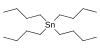

tetra-n-butyltin

Has synonym(s): Stannane,-tetrabutyl-
Definition: Tetrabutyltin is the organotin compound with the molecular formula Sn(CH2CH2CH2CH3)4 or SnBu4, where Bu is butyl −CH2CH2CH2CH3. Sometimes abbreviated TTBT, it is a colorless, lipophilic oil.Tetrabutyltin is a precursor to tributyltin and dibutyltin compounds. By the redistribution reaction with tin(IV) chloride it forms tributyltin chloride and dibutyltin chloride. These compounds are starting materials for a wide range of organotin compounds used as stabilizers for PVC and as biocides, fungicides, wood preservatives, and (historically) marine anti-biofouling agents.
Source: Wikipedia
Wikipedia Page (Something wrong with this association? Let us know.)
Wikidata Page (Something wrong with this association? Let us know.)